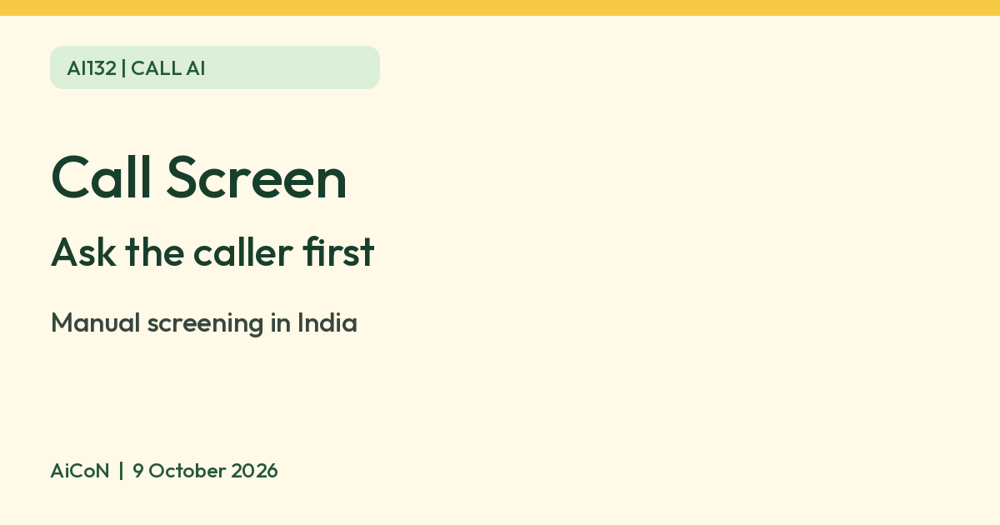

Google Call Screen on Pixel: let the phone ask who is calling
Google Phone app help says Call Screen lets you find out who is calling and why before you pick up. Your phone asks the caller, and you read their reply as a live transcript. Google lists manual screening for Pixel phones in India.

What it is
Google's Phone app help page says Call Screen lets you find out who is calling and why before you answer. It works on your device and does not use Wi-Fi or mobile data.
Is it available in India
Google lists India among the countries where you can screen calls manually on Pixel phones. Automatic screening is listed for all Pixel phones in the US only. Google also says manual Call Screen only works with a SIM from a listed country.
How to screen a call manually
- Update the Phone app first. If Screen call is missing, open Phone > More > Settings > Spam and Call Screen (or Call Screen), and follow any setup instructions.
- When a call comes in, tap Screen call.
- Call Assist asks who is calling and why, and you see a real-time transcript of the reply.
- Then pick a suggested reply, pick up, or hang up.
Google lists replies such as "Is it urgent?", "Report as spam" and "I'll call you back".
AI replies
You can turn on AI replies, which Google says are generated on the device from what the caller said in the screening. Open Phone, then More, Settings, Spam and Call Screen, and turn on Respond with AI replies. Google warns replies may be inaccurate.
Transcripts
Google says screened calls save a transcript on your phone. You can also turn on Save Call Screen audio. Touch and hold a screened call to delete the transcript and recording.
Limits to know
- It is for Pixel phones. Google's page notes manual screening on selected Android devices only in the US and Canada.
- It does not work with third-party call recording or screen recording apps.
- Your phone may stop playing media while it screens a call.
- If you see no Call Screen settings, Google says your device does not work with Call Screen.
- Google says Call Screen may not fully understand or transcribe everything a caller says.
- We did not verify which languages it understands in India, and we did not test it ourselves.
Frequently asked questions
Does it use my mobile data?
Google says Call Screen works on your device and does not use Wi-Fi or mobile data.
Will it block spam automatically in India?
Google lists automatic screening for the US only. In India, you tap Screen call yourself.
Sources: Google Phone app Help, Screen your calls before you answer them. Checked 9 October 2026.